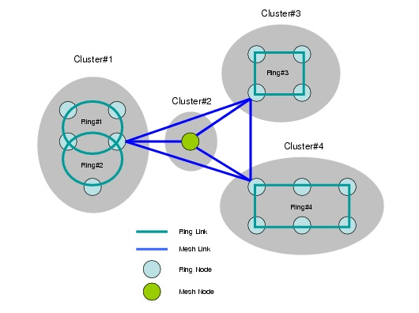

Ring Design > Ring Dimensioning > Hybrid Ring-Mesh Design
Hybrid Ring-Mesh Design
When the option "Allow connections partly over mesh" is selected, the ring routing algorithm considers both rings as mesh links to route traffic over. In certain cases, there might be no ring interconnectivity between two nodes so the only option is to route the connection (partially) over mesh links. In other circumstances, the shortest or cheapest path might include one or more mesh links. As such, the ring routing algorithm ends up with a solution in which certain connections are only partially routed over rings (or not routed at all).
Note—The ring routing algorithm will not actually route the connections over the mesh links but will leave part (or all) of the connection unrouted instead. To route these unrouted portions of traffic over the mesh, use one of the mesh design actions, such as routing or grooming.
You can control the number of mesh links considered by the ring routing algorithm by setting the "Mesh Link Mode" option in the Advanced Ring Design Options. The following options are available:
For definition purposes, a cluster is a set of nodes which is constructed by starting with a set containing a single node and then adding to that set all nodes that are reachable via adjacent rings. No node can belong to two clusters and pure mesh nodes constitute singleton clusters. Figure 12-10 illustrates the concept in more detail.
Figure 12-10 Hybrid Ring-Mesh Design

Figure 12-10 shows how clusters are formed and how they are then connected to each other by a single mesh link.
- With the Full Mesh option, each node is considered to be connected to every other node with a mesh link.
- The No Mesh option prevents the consideration of any mesh links. Thus, the connections can only be routed over rings and no candidate mesh link possibilities are considered.
- Candidate Mesh involves the importing of mesh link candidates via an import CSV file.
| Home © 1987-2007 OPNET Technologies, Inc. All Rights Reserved. This software may be covered by one or more U.S. Patents. See complete patent notice in the Legal Notices section. OPNET Support Center |